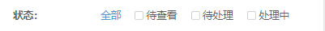
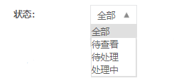
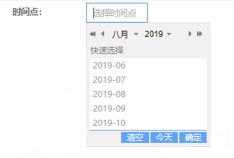
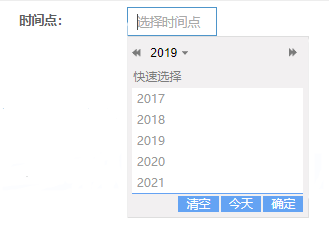

过滤器¶
基本用法¶
过滤器视图通常需要跟服务端搭配使用。视图中渲染的各种 过滤器组件 , 详见本章其它小节。
注解
重要的三步：
在控制器中实现
ITableViewCreator的createListFilters()方法。在
createListFilters()方法中实例化各种组件, 并且以数组形式返回。在同级目录的
view文件中渲染视图内容。
控制器写法：
1 2 3 4 5 6 7 8 9 10 11 12 13 14 | <?php
class ExampleManageIndexAction extends ListAction implements ITableViewCreator
{
...
public function createListFilters()
{
$filters[] = new TimeRangeFilter('assign_time', '指派时间', 'simple');
return $filters;
}
...
}
?>
|
视图文件写法：
1 2 3 4 5 6 7 | <?php
use CC\util\common\widget\panel\ListSearchPanel;
use CC\util\common\widget\widget\FilterWidget;
use CC\util\common\widget\widget\WidgetBuilder;
echo WidgetBuilder::build(new FilterWidget($this), ListSearchPanel::instance());
?>
|
过滤器样式¶
- 方法：
new FilterWidget( ITableViewCreator $tableViewBuilder, $options = array() )
- 参数：
$tableViewBuilder：
必填表格对象，$options： 配置项：
1. id： 默认 'id' => '' ，用于标记表单的 id，不标记默认自动随机号码；
2. show_export_btn： 默认 'show_export_btn' => false ，可标记是否在过滤器最后显示导出按钮；
3. style： 默认 'style' => 'vertical' ，默认显示垂直排列风格，可定义水平排列风格（ 'style' => 'horizontal' ）；
4. filterBuildBeforeHandler： 默认 'filterBuildBeforeHandler' => null ，过滤器 BeforeHandler ，
尚未验证用法；5. is_asyn： 默认 'is_asyn' => false ， 是否异步，
尚未验证用法；6. choose_obj： 默认 'choose_obj' => '' ， JS对象 要求必须要有 refreshCallBack 这个方法，
尚未验证用法；7. action： 默认 'action' => '' ，可指定表单的 action ，一般会配合提交按钮才行；
小技巧
默认样式是垂直显示方式（ ['style' => 'vertical'] ）。
水平排列风格¶
- 说明：
水平排列风格将会 从左到右依次排列 ，元素放不下的情况会自动换到下一行显示。
- 代码块：
1 2 3 4 5 6 7 | <?php
use CC\util\common\widget\panel\ListSearchPanel;
use CC\util\common\widget\widget\FilterWidget;
use CC\util\common\widget\widget\WidgetBuilder;
echo WidgetBuilder::build(new FilterWidget($this, ['style' => 'horizontal']), ListSearchPanel::instance());
?>
|
- 效果图：
图：水平排列风格效果图¶
垂直排列风格¶
- 说明：
垂直排列风格 一行只会显示一个 ，多个依次换行显示，默认超过
5个之后自动收缩。- 代码块：
1 2 3 4 5 6 7 | <?php
use CC\util\common\widget\panel\ListSearchPanel;
use CC\util\common\widget\widget\FilterWidget;
use CC\util\common\widget\widget\WidgetBuilder;
echo WidgetBuilder::build(new FilterWidget($this, ['style' => 'vertical']), ListSearchPanel::instance());
?>
|
- 效果图：
图：垂直排列风格效果图¶
过滤器组件¶
文本输入框¶
1 2 3 4 5 6 | <?php
$filters[] = new InputFilter($name, $label, $placeholder, $is_show_submit, [
'is_need_setting' => false,
'is_need_reset' => true,
]);
?>
|
单选框 & 复选框¶
- 方法：
new SelectFilter( $name, $label, $data_arr, $style = '', $default_option = [] )
- 参数：
$name：
必填字段名，$label：
必填标签显示名称，$data_arr：
必填选择框数据（一维数组），$style： 选择框样式（ '', 'multi', 'drop-down', 'drop-pop' ）默认第一个，
$default_option： 额外配置默认选择的一项 ['value' => 'showText']，默认不选择。
- 可扩展方法：
setIsMultiple(bool)： 设置是否多选，只适用于
$style：'' | 'multi'的场景。
1 2 3
<?php $filters[] = (new SelectFilter($name, $label, $data_arr))->setIsMultiple(bool); ?>
- 使用例子：
例1： 配置 $style = 'multi' 或者 $style = ''，支持单选、多选双模式。
图：单选、多选双模式效果图¶
小技巧
需要保持这个样式但是只需要单选功能，可配置扩展方法（ setIsMultiple(false) ）设置单选;
例2： 配置 $style = 'drop-down' ，单选，不自动跳转。
图：单选不自动跳转效果图¶
例3： 配置 $style = 'drop-pop' ，单选，自动跳转。
图：单选自动跳转效果图¶
时间范围¶
- 方法：
new TimeRangeFilter( $name, $label, $style = '', $ranges = null, $option = [] )
- 参数：
$name：
必填字段名，$label：
必填标签显示名称，$style： 选择框样式（ '', 'simple' ）默认第一个，
$ranges： 默认 ['total', 'today', 'this_week', 'this_month']，
$option： 额外配置默认选择项 ['default_choose' => 'total']，默认不选择。
注解
$ranges 可配置的可选项。
1. 'total' 全部,
2. 'today' 今日,
3. 'this_week' 本周,
4. 'this_month' 本月,
5. 'yesterday' 昨日,
6. 'last_week' 上周,
7. 'last_month' 上一月,
- 扩展方法：
setPlaceholders($placeholders) 设置提示语。
1 2 3 4 5 6 7 8 9 10
<?php $filters[] = (new TimeRangeFilter($name, $label))->setPlaceholders(array); $filters[] = (new TimeRangeFilter($name, $label)) ->setPlaceholders([ 'start' => '开始时间', 'end' => '结束时间' ]); ?>
- 使用例子：
例1： 配置 $style = '' 或者 不配置，默认的显示。
图：默认显示效果图¶
例2： 配置 $style = 'simple' ，将会隐藏样式前面的类型。
图：简单时间范围过滤器效果图¶
小技巧
后台接收的参数可能有：
类型开始时间结束时间类型字段名：「字段名」_type，值：参考上文的配置可选项；
开始时间字段名：「字段名」_start，值：选择的开始时间（2019-08-06）；
结束时间字段名：「字段名」_end，值：选择的结束时间（2019-08-07）；
如：
submit_time_type=this_weeksubmit_time_start=2019-08-06submit_time_end=2019-08-07
时间点¶
- 方法：
new SimpleTimeFilter( $name, $label, $placeholder, $style = '', $end_min = false, $end_max = false )
- 参数：
$name：
必填字段名，$label：
必填标签显示名称，$placeholder：
必填描述输入字段预期值的提示信息，$style： 配置该组件的 class 属性，选择月份 'date-month' 选择年份 'date-year' 默认选择日期，
$end_min： 可选择的最早时间是否从当前开始，
$end_max： 可选择的最晚时间是否从当前结束。
- 扩展方法：
暂无 set 方法。
- 使用例子：
例1： 配置 $style = '' 或者 不配置，日期的选择。
图：日期选择效果图¶
例2： 配置 $style = 'date-month' ，可按月份选择。
图：月份选择效果图¶
例3： 配置 $style = 'date-year' ，可按年份选择。
图：年份选择效果图¶
值域范围¶
- 方法：
new RangeInputFilter( $min_name, $max_name, $label, $unit='', $name='', $is_show_submit = false )
- 参数：
$min_name：
必填左值字段名，$max_name：
必填右值字段名，$label：
必填标签显示名称，$unit： 显示在组件框后面的内容，可作说明提示，
$name： 定义 class 属性，默认是有一个前缀 sure_ ，
$is_show_submit： 是否显示 确定 按钮。
- 扩展方法：
暂无 set 方法。
- 使用例子：
例1： 默认配置。
图：默认值域范围效果图¶
例2： 额外配置
$uint = '输入请从12开始'参数。图：带说明值域范围效果图¶
例3： 额外配置
$is_show_submit = true参数。在点击输入框时/输入时显示确定按钮。图：显示确定按钮效果图¶
树结构¶
- 方法：
new TreeFilter( $name, $label, $data_arr, $options = array() )
- 参数：
$name：
必填字段名，$label：
必填标签显示名称，$data_arr：
必填树结构数据，样例结构： array ( "id":"1", "name":"xx", "nodeId":"0", "is_node":true, "is_check":false, )$options： 配置项：
1. 'only_child' => true, 是否只能获取子节点，默认配置是 true ；
2. 'tips' => '', 输入框提示语， 默认配置显示参数 $label 值；
3. 'auto_submit' => true, 是否在选择完成后自动提交请求，默认配置是 false ；
4. 'sel_data_type' => '', 选中数据类型, 'merge' 合并子节点
未验证用法；5. 'sel_data_node_separate' => false, 选中数据区分阶段
未验证用法；6. 'is_multi' => 'true', 是否多选，传字符串 'true' 或 'false' ，不配置默认是 'true'；
7. 'is_has_button' => false, 是否在选择框底部显示
清空和确定按钮；8. 'lazyLoad' => false, 是否开启异步加载，用于数据比较多的时候，默认配置是 false ；
9. 'lazyLoadUrl' => '', 异步加载url，需要开启异步加载生效，默认配置是 空 ；
10. 'has_search' => true, 是否显示搜索框，默认配置是 true ；
11. 'like_search' => false, 以为是个配置是否模糊搜索，看了代码没啥用；
12. 'position' => 'absolute' ，树形框的位置，一般会配置 'fixed' 。
小技巧
配置
'is_has_button' = true后一般不配置自动提交请求（ auto_submit ），默认配置是 false ；数据量庞大时可配置异步加载。
- 扩展方法：
暂无 set 方法。
- 使用例子：
例1： 常规配置，需配置
'position' => 'fixed'让显示框置于顶层。1 2 3 4 5
<?php $filters[] = new TreeFilter($name, $label, $data_arr, [ 'position' => 'fixed' ]); ?>
图：常规树形结构效果图¶
例2： 常规配置，需配置
'is_has_button' => true在选择框底部显示清空和确定按钮。1 2 3 4 5
<?php $filters[] = new TreeFilter($name, $label, $data_arr, [ 'is_has_button' => true ]); ?>

图：选择框底部显示按钮效果图¶
注解
配置底部按钮后树结构会全部收缩起来。
自定义过滤器¶
注解
重要的两步：
新建控制器并继承
FilterAbs控制器, 重写onCreateFilter(\CRequest $request)方法。在控制器同级目录的
view目录中新建 同名视图文件 （首字母小写）。
控制器写法：
1 2 3 4 5 6 7 8 9 10 11 12 13 14 15 | <?php
class ExampleFilter extends FilterAbs
{
...
public function onCreateFilter(\CRequest $request)
{
return [
'name' => '在数组里传递给视图数据'
];
}
...
}
?>
|
视图文件写法： 视图内容自由发挥。
控制器与视图存放目录：
├─view
│ └─exampleFilter.php 视图文件（首字母小写）
├─ExampleFilter.php 控制器
│